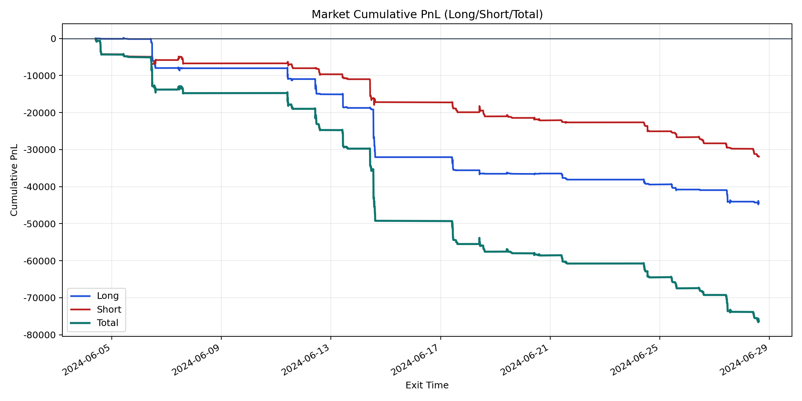
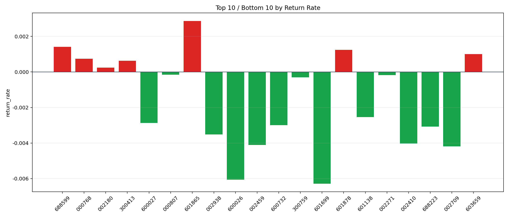

| repo_root | /home/haoranyou/data/output/alpha0.4_1w_5s_3ticks_index_filter/index_weights_300 |
|---|---|
| period_months | 1 |
| period_label | 2024-06-04_to_2024-06-28 |
| start_time | 2024-06-04 09:50:57 |
| end_time | 2024-06-28 14:45:02 |
| n_trades | 4691 |
| n_symbols | 45 |
| total_pnl | -76321.06144999996 |
| long_total_pnl | -44409.54165000002 |
| short_total_pnl | -31911.51979999995 |
| total_entry_notional | 43242345.0 |
| long_entry_notional | 21040598.0 |
| short_entry_notional | 22201747.0 |
| total_return_rate | -0.001764961207584833 |
| long_return_rate | -0.002110659670889583 |
| short_return_rate | -0.0014373427370377634 |
| top_symbols_by_return | ["601865", "688599", "601878", "603659", "000768", "300413", "002180", "000807", "002271", "300759"] |
| bottom_symbols_by_return | ["601699", "600026", "002709", "002459", "002410", "002938", "688223", "600732", "600027", "601138"] |

